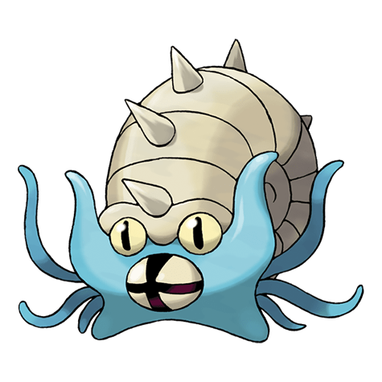

Назад
Омастар

Омастар — Покемон первого поколения под номером 139 в Покедекс. Обитает он в регионе Канто и относится к Каменному и Водному типу. Это последняя стадия эволюции Покемона Оманит. Омастар использует свои щупальца для захвата добычи. Одной из предполагаемых причин его вымирания считается тяжёлый вес раковины, что сделало его громоздким, а его движения слишком медленными.
Тип:
Водяной
Каменный
Эволюция
# 139 Омастар
Финальная стадия